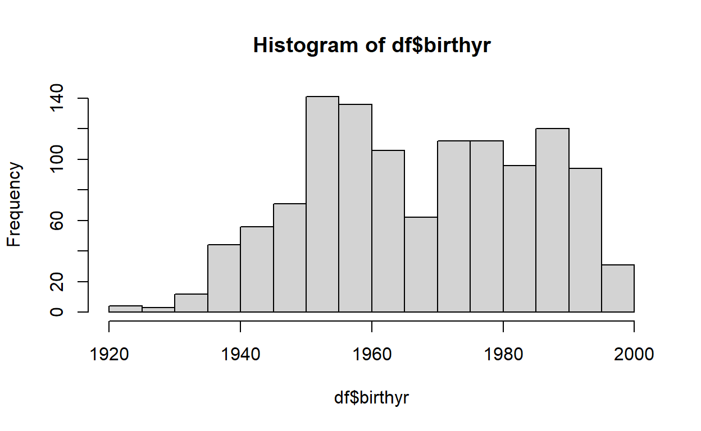

Welcome back! In this post, I’ll cover some common operations done while manipulating data in R using base R functions.
Video Summary
Getting Data into R
In the last tutorial, we discussed one way pre-made data can be loaded into R: through packages. For non-toy examples, though, you will typically need to “read” data from an external file or site into your R environment in order to manipulate it. There are many ways to do this, and we’ll cover a few below.
Reading local files
Typically, you will want to read files into R that already exist on your local computer. To do this, you need to know two things: where the file is located and what type of file it is.
Working directories
Regarding file location, you will greatly benefit from keeping a consistent file organization system. One of the most worthwhile investments in grad school will be cloud storage. You should be able to completely destroy your computer and be back up and running with your files overnight. Typically, I keep one Dropbox folder per project with subfolders for data, code, writing, etc.
By default, R looks for and saves file in the working directory of the current R session. To see the current working directory for your session, enter the function getwd(). If you want to change your working directory, you can do so manually by entering the folder path in setwd(). For example, say I have a file I want to read in from the “r_maven” folder in my Dropbox. Given my own file pathing, my command may look like:
You can also set your working directory through RStudio using Session > Set Working Directory > Choose Directory. Selecting “Source file location” will set the working directory to where the current script is saved. You can also set the default working directory from Tools > Global Options. After that, you can use a period to reference your default directory in the file path. For example, if my default directory is set to “C:/Users/username”, I could access the same folder as above using:
setwd("./Dropbox/r_maven")
These are the “classic” ways of setting the working directory, but modern alternatives exist. For example, you’ll notice I’m using what’s called an R Project, which automatically sets the working directory to the project folder. This is particularly useful when collaborating or using Github. You can learn more about R Projects here, but for now we’ll consider it a more advanced topic.
File types
Now that we’ve set our working directory, we need to actually read in the data. There are many types of files you might work with, but the most common is a “.csv” file, which stands for “comma separated values.” R has a built-in function read.csv() for reading files like this. Assuming your file is located in your working directory, the following will read in the data and assign it to the object dat:
dat = read.csv("filename.csv")
If you check ?read.csv, you’ll notice the function returns a dataframe, so we can treat dat appropriately. Alternatively, many now prefer the read_csv() function from the readr package, which is documented to be significantly faster than base R’s read.csv().
What if your data is saved as something other than a .csv file, though? You can find a solution for pretty much any file type. For Stata/SAS/SPSS files, I suggest functions from haven, such as read_dta(), read_sas(), and read_spss(). If you need data from a non-csv Excel file, the readxl and xlsx packages will be useful. For those with massive data files, fread() from data.table will be your best friend.
Reading non-local files
Sometimes we want to read files we haven’t downloaded locally, which is especially useful if we need to save space on our local drive. One way to read non-local files is simply using the appropriate read function with the link to the appropriate file.
For example, the New York Times datasets of COVID-19 cases and deaths. Looking at their documentation, I figure out the link for their nationally-aggregated results. I can read that file in below:
nyt_cov = read.csv("https://raw.githubusercontent.com/nytimes/covid-19-data/master/us.csv")
head(nyt_cov) # Print first 6 rows
date cases deaths
1 2020-01-21 1 0
2 2020-01-22 1 0
3 2020-01-23 1 0
4 2020-01-24 2 0
5 2020-01-25 3 0
6 2020-01-26 5 0Another common way of getting data is querying an API. This is a fairly advanced topic, but I want you to know it’s an option. For example, King County, WA has a really well organized repository of precinct-level election results. I can get those results into an R-friendly format with the following:
# The following two packages are necessary for API querying
library(httr)
library(jsonlite)
res = GET("https://data.kingcounty.gov/resource/2824-fjrn.json") # Save result of query to res
king_wa = fromJSON(rawToChar(res$content)) # clean content and convert to dataframe
head(king_wa)
precinct race leg cc cg
1 SHL 32-0001 State of Washington Advisory Vote No. 32 32 1 7
2 SHL 32-0001 State of Washington Advisory Vote No. 32 32 1 7
3 SHL 32-0001 State of Washington Advisory Vote No. 32 32 1 7
4 SHL 32-0001 State of Washington Advisory Vote No. 32 32 1 7
5 SHL 32-0001 State of Washington Advisory Vote No. 32 32 1 7
6 SHL 32-0001 State of Washington Advisory Vote No. 32 32 1 7
countergroup party countertype sumofcount
1 Total NP Registered Voters 566
2 Total NP Times Counted 418
3 Total NP Times Under Voted 42
4 Total <NA> Repealed 182
5 Total <NA> Maintained 194
6 Total NP Times Over Voted 0Again, there’s more going on here than we’re going to cover, such as the rawToChar() function and the fact that this API has a default limit of 1000 results returned per query, but you should know it exists as an option. Note we don’t need to set a working directory for external files.
Manipulating Data
For the next section, we’ll be using data from the 2016 ANES pilot, provided by Tyler Reny. Let’s read that into our environment now:
df = foreign::read.dta("http://tylerreny.github.io/data/anes_pilot_2016.dta",
convert.factors = F)
Notice my use of foreign:: before the function we want to call. In some instances, you may want to use a function from a package without loading the entire package. The package-double colon-function syntax allows you to do that.
Getting to know your data
Downloading data sight unseen tends to mean we don’t know much about what’s inside. R has a few functions to help do so that you’ve already seen, such as:
dim(df)
[1] 1200 598Yikes, that’s 1200 observations of 598 variables. Because of that, I’m not going to show the output of the functions below, since I’d be printing 598 lines (but see the video). Instead, know that names() returns a character vector of all the variable names in the dataframe. glimpse() from the dplyr package gives slightly more detail, giving you the variable names, the types of the variables, and the first few values.
Exploring the data
Most data, especially survey data, will come with a codebook to help guide your through how to interpret values associated with each variable. The code book for this particular dataset can be found here. For this exercise, we’ll focus on cleaning the demographic variables, which we can find in this chunk:
names(df)[218:238]
[1] "birthyr" "gender" "race" "race_other"
[5] "educ" "marstat" "speakspanish" "employ"
[9] "employ_t" "faminc" "faminc2" "state"
[13] "votereg" "pid3" "pid7" "ideo5"
[17] "newsint" "pew_bornagain" "pew_churatd" "religpew"
[21] "religpew_t" If we want to dive into one particular variable, we can do so using head() and the variable selection syntax dataframe-dollar sign-variable:
head(df$birthyr)
[1] 1995 1950 1973 1980 1978 1957Looks numeric, but we can confirm with class()
class(df$birthyr)
[1] "numeric"We can also use the table function to see how many times each year is in the data:
table(df$birthyr)
1921 1924 1925 1926 1927 1930 1931 1932 1933 1934 1935 1936 1937 1938
1 1 2 1 1 1 2 3 4 2 1 9 7 10
1939 1940 1941 1942 1943 1944 1945 1946 1947 1948 1949 1950 1951 1952
6 12 8 10 14 8 16 12 16 9 16 18 20 24
1953 1954 1955 1956 1957 1958 1959 1960 1961 1962 1963 1964 1965 1966
28 38 31 34 27 23 26 26 29 21 17 22 17 9
1967 1968 1969 1970 1971 1972 1973 1974 1975 1976 1977 1978 1979 1980
14 18 8 13 10 24 34 20 24 21 25 26 16 24
1981 1982 1983 1984 1985 1986 1987 1988 1989 1990 1991 1992 1993 1994
20 22 19 18 17 21 22 24 27 26 20 22 19 20
1995 1996 1997
13 17 14
1921 1924 1926 1927 1930 1935 1925 1931 1934 1932 1933 1939 1937 1941
1 1 1 1 1 1 2 2 2 3 4 6 7 8
1944 1969 1936 1948 1966 1938 1942 1971 1940 1946 1970 1995 1943 1967
8 8 9 9 9 10 10 10 12 12 13 13 14 14
1997 1945 1947 1949 1979 1963 1965 1985 1996 1950 1968 1984 1983 1993
14 16 16 16 16 17 17 17 17 18 18 18 19 19
1951 1974 1981 1991 1994 1962 1976 1986 1964 1982 1987 1992 1958 1952
20 20 20 20 20 21 21 21 22 22 22 22 23 24
1972 1975 1980 1988 1977 1959 1960 1978 1990 1957 1989 1953 1961 1955
24 24 24 24 25 26 26 26 26 27 27 28 29 31
1956 1973 1954
34 34 38 You can also look at a histogram to see how the years are distributed.
hist(df$birthyr)

This is great, but say I want to create an age variable instead. To do that, we need to create a new variable, subtracting birth year from 2016 (since that’s when the survey was conducted):
df$age = 2016 - df$birthyr
You can check the new variable was created by looking at the name of the last variable in the dataset, where R puts new variables by default:
And we can look at a few properties of our newly created variable using a few functions you know and a few that are new:
hist(df$age)
table(df$age)
range(df$age) # Min and Max values
mean(df$age) # Average/Mean
median(df$age) # Median
19 20 21 22 23 24 25 26 27 28 29 30 31 32 33 34 35 36 37 38 39 40 41
14 17 13 20 19 22 20 26 27 24 22 21 17 18 19 22 20 24 16 26 25 21 24
42 43 44 45 46 47 48 49 50 51 52 53 54 55 56 57 58 59 60 61 62 63 64
20 34 24 10 13 8 18 14 9 17 22 17 21 29 26 26 23 27 34 31 38 28 24
65 66 67 68 69 70 71 72 73 74 75 76 77 78 79 80 81 82 83 84 85 86 89
20 18 16 9 16 12 16 8 14 10 8 12 6 10 7 9 1 2 4 3 2 1 1
90 91 92 95
1 2 1 1
[1] 19 95
[1] 48.0625
[1] 48One of the nice things about this age variable is that there is no missing data (otherwise our mean/median functions would have returned an error). If you ever want to check for the prevalence of NA values, you can use is.na() (which returns a boolean vector the same length as the vector given to the function) in conjunction with a few other functions. Let’s do that using the ftobama variable, a feeling thermometer for President Obama, which I know has some NAs:
[1] TRUE
FALSE TRUE
1198 2 [1] 62 742So we know there are NA values in observations 62 and 742. We can check that using vector subsetting:
df$ftobama[61:63]
[1] 88 NA 89Recoding
Sometimes survey data needs to be recoded to reflect the values we are interested. Let’s look at the distribution of the family income variable:
table(df$faminc)
1 2 3 4 5 6 7 8 9 10 11 12 13 14 15 16 31
75 122 149 128 105 99 64 77 83 50 46 29 11 5 5 3 2
97 98
146 1 So there seems to be a bunch of values 1-16, but then 31? What about 97 and 98? Typically numbers like these reflect missing values in the data, but check the codebook to make sure. This is indeed the case for these values, so we want to recode them to reflect that. Look what would happen if we just took these values to be normal numeric values:

R is assuming these are just part of the continuous spectrum of values for faminc, which we know shouldn’t be the case, and it skews our summary statistics. Let’s create a new variable and recode it properly, overwriting the troublesome numbers with NA:
df$income_family = df$faminc # Create new variable
# Overwrite values
df$income_family[df$income_family == 31] = NA
df$income_family[df$income_family == 97] = NA
df$income_family[df$income_family == 98] = NA
# Check distribution
hist(df$income_family)

# Check mean (notice na.rm = T)
mean(df$income_family, na.rm=T)
[1] 5.611798That’s better! What exactly is the code above doing when we overwrite the values? Remember our vector subsetting and assignment operators… we take the vector df$income_family, subset to the cases where the value is equal to a certain number, then assign NA to those cases.
Alternatively, we can do this all in one step using the %in% operator:
df$income_family[df$income_family %in% c(31, 97, 98)] = NA
You can also write a function if you are going to use it a lot. This is way more complex than you need to know right now, but it’s an introduction to what functions do.
ifelse()
Now we want to recode race, which is currently a single variable with discrete values for different racial groups, into a series of dummy variables (0/1) for each racial group. This can be achieved using ifelse(), which takes three arguments: test, yes, and no (in that order). Test is a logical test, yes is the value returned if the test is TRUE, and no is the value returned if the test is FALSE.
df$white <- ifelse(df$race == 1, 1, 0)
table(df$white) #always check your recoding afterwards against codebook
0 1
325 875 You can chain multiple logic tests into your ifelse() statements. For example, if I wanted to create a dummy variable for white men, I could do the following:
df$white_man = ifelse(df$race == 1 & df$gender == 2, 1, 0)
Note that for observations with NA values, ifelse() willl return NA instead of 1 or 0. Usually that’s fine.
Reverse Coding
Partisanship is usually measured using a 7 point scale, which is the case for the pid7 variable. Let’s first check on NAs:
Looks like we’ll have to get rid of those. One thing I have trouble with in the pid7 scale is whether 7 is strong Republican or strong Democrat. I’ll recode the data and come back to it months later and forget. So, I suggest renaming it by the direction of the scale. So if 7 is strong Republican, name the variable republican_pid7 or just republican and vice versa.
df$republican_pid7 = df$pid7
I usually code all my variables in similar directions. If interested in exploring the effects of racial resentment on vote or attitudes towards Obama, for example, we would want the high values on the racial resentment scale to be more racially resentful, pid7 to be recoded with Republican as the high category, and ideology to be recoded so very conservative is the largest value. When you are looking at a regression, you will see that all are positive. Otherwise you have to remember how each is coded. This way is easier.
You will have to reverse code things all the time. Here is an easy way to do it.
df$democrat_pid7 = abs(df$pid7 - 8) #reverse code
#step 1. How many unique values in the scale? Add one
length(table(df$pid7)) + 1 #this would be a more general form of that
[1] 8#step 2. Double check that the new scale is, indeed, a mirror image of the old scale
table(dem7 = df$democrat_pid7, rep7 = df$republican_pid7)
rep7
dem7 1 2 3 4 5 6 7
1 0 0 0 0 0 0 158
2 0 0 0 0 0 116 0
3 0 0 0 0 111 0 0
4 0 0 0 205 0 0 0
5 0 0 109 0 0 0 0
6 0 146 0 0 0 0 0
7 300 0 0 0 0 0 0You can also write this trick into a function! But always double check that things were recoded correctly!
Scales
Finally, we want to create a racial resentment scale. Go back to the codebook and find rr1 through rr4. This is the racial resentment battery. You’ll notice that they are all likert scale questions coded from 1 to 5 with different values for missing data. Some are reverse coded so that most resentful is a higher value and some so that least resentful is a higher value. What you have to do is look at each one, check for missing data, see if you need to flip ordering of values or not to be consistent, and then combine them all into a scale by adding them together.
# Special favors
table(df$rr1)
1 2 3 4 5 8
480 247 204 118 148 3 df$rr1rc <- recode_missing(df$rr1, 8) #recode missing
df$rr1rc <- reverse_code(df$rr1rc) #reverse code
table(df$rr1rc)
1 2 3 4 5
148 118 204 247 480
# Work way out
table(df$rr2)
1 2 3 4 5 8
213 243 196 200 345 3 df$rr2rc <- recode_missing(df$rr2, 8) #recode missing
table(df$rr2rc)
1 2 3 4 5
213 243 196 200 345
# Less than deserve
table(df$rr3)
1 2 3 4 5 8
165 178 315 212 327 3 df$rr3rc <- recode_missing(df$rr3, 8) #recode missing
table(df$rr3rc)
1 2 3 4 5
165 178 315 212 327
# Try harder
table(df$rr4)
1 2 3 4 5 8
270 274 301 144 209 2 df$rr4rc <- recode_missing(df$rr4, 8) #recode missing
df$rr4rc <- reverse_code(df$rr4rc) #reverse code
table(df$rr4rc)
1 2 3 4 5
209 144 301 274 270
#check correlation to ensure they are coded properly
#if you have negative numbers, you miscoded one
cor(cbind(df$rr1rc,df$rr2rc,df$rr3rc,df$rr4rc), use='complete.obs')
[,1] [,2] [,3] [,4]
[1,] 1.0000000 0.6242036 0.6071225 0.7349020
[2,] 0.6242036 1.0000000 0.7642206 0.5554276
[3,] 0.6071225 0.7642206 1.0000000 0.5444361
[4,] 0.7349020 0.5554276 0.5444361 1.0000000
#combine into scale (ask yourself why this math works)
df$rr_scale <- ((df$rr1rc + df$rr2rc + df$rr3rc + df$rr4rc) - 4)/16
hist(df$rr_scale)
range(df$rr_scale, na.rm=T)
[1] 0 1Writing Data
So far we’ve created new variables for age, income, and race. There is so much more we could do here… recode gender to be a 0/1 indicator for female, reverse code ideology, etc. We’ve done quite a bit, though, so we should save our changes by writing this file to a new csv that we can load later.
The process of writing to csv is very similar to that of reading in data. By default, the file will be written to your working directoy. If you want to write it elsewhere, just specify it in the path argument:
write.csv(df, file = "C:/Users/myname/Dropbox/r_maven/cleaned_anes.csv")
Test your knowledge
Follow THIS LINK for a quick interactive knowledge check.